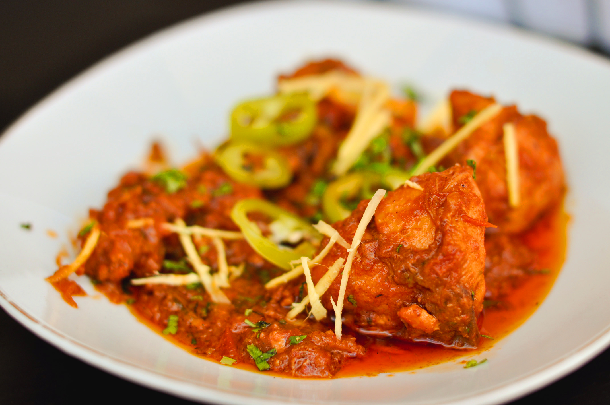

Chicken Karahi Recipe

Photo by James
Description
Chicken Karahi is a quick and flavorful Pakistani curry cooked in a wok-like pan called a "karahi." It’s made using minimal ingredients,
yet delivers bold flavors with a tomato-based gravy and a generous hint of ginger, garlic, and green chilies..
What makes karahi stand out is its thick, oil-separating masala and lack of onions—letting the chicken and tomatoes shine through. This
dish is often prepared on high flame, giving it a rustic and intense flavor profile, perfect for serving with naan or roti.
Ingredients
- ½ kg chicken (bone-in pieces)
- 3 medium tomatoes (blended or finely chopped)
- 1 tbsp ginger garlic paste
- 2 green chilies (sliced)
- 1 tsp red chili powder
- 1 tsp crushed coriander
- ½ tsp cumin seeds
- Salt to taste
- ¼ cup oil
- Fresh ginger (julienned) and coriander for garnish
Steps
- Heat oil in a wok, add ginger garlic paste and chicken, and sauté until chicken changes color.
- Add tomatoes, salt, and spices; cook on medium heat until the tomatoes break down and oil separates.
- Add green chilies and cook on high heat for 5–7 minutes for a thick masala.
- Garnish with coriander and julienned ginger; serve hot.
Home